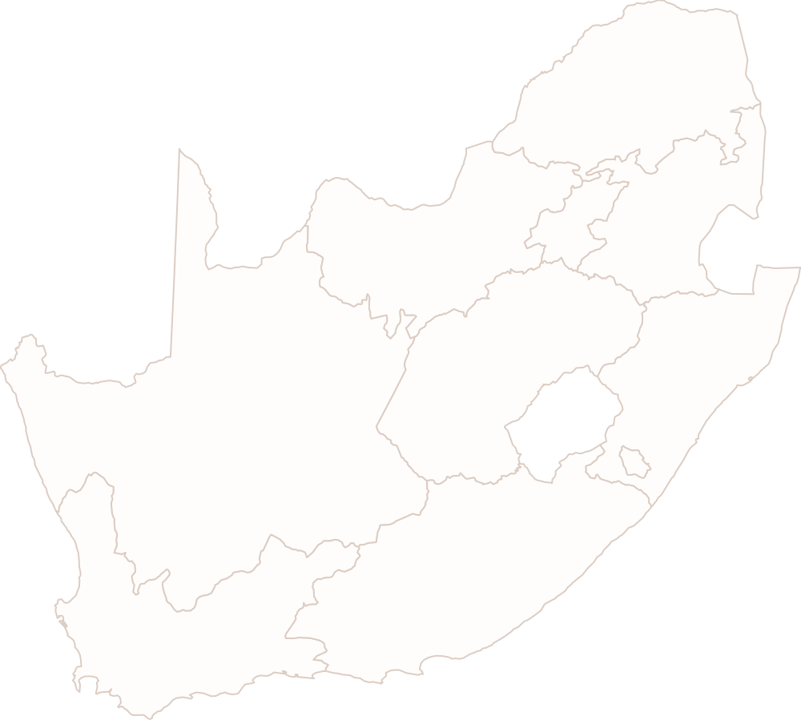

South African Accredited Skills Development Providers (SDPs)
Explore trusted training providers, qualifications and career pathways across South Africa.
Your future. Our impact.
Helping unemployed South Africans explore qualifications, find accredited providers, and contact them about possible learnership opportunities.
Not sure where to start?
Ask the Gemma Learnership Assistant to suggest career paths, qualifications and accredited providers from the platform data.
Providers across South Africa
Explore where accredited providers are located

SETA / Quality Partner
Swipe or use arrows to view partners
![Services SETA logo]() SERVICES
SERVICES
Services SETA
Services Sector Education and Training Authority
Accredited programmes:52
Active accreditations:2,585
Explore careers
Discover career options linked to qualifications.
Browse by province
Find opportunities in your area.
Career Families
Browse career family groups from the dataset.
Qualification types
Browse qualification groups available in the dataset.
Learning opens doors. Skills unlock futures.
Use our tools to explore, compare and connect with accredited providers you can trust.
Explore providers, qualifications, careers and pathways that can take you further.
Discover trusted providers, quality assured qualifications and real career pathways across South Africa.
Explore your preferred field, find accredited providers, and contact them about possible learnership opportunities.
Use the filters to refine your search and discover quality assured qualifications and real career pathways.
South Africa at a glance
Explore training opportunities across all provinces.
Loading provider records...
Please wait while the QCTO records are prepared.
| Provider Name | Province | Career | Qualification Title | NQF Level | SETA / Partner | Status | Contact | |
|---|---|---|---|---|---|---|---|---|
| Loading provider records... | ||||||||
Learning opens doors. Skills unlock futures.
Use our tools to explore, compare and connect with accredited providers you can trust.
Explore careers, families and pathways that fit your future.
Discover career families, in-demand careers and the qualification routes that can take you there.
Explore career families, compare careers, and discover pathways that match your future goals.
Browse career options, understand qualification routes, and find accredited providers that can help you get started.
Browse career families
All careers
How this page works
1
Choose a career familyBrowse broad fields that match your interests.
2
Explore careersOpen careers to see what they involve.
3
View pathwaysSee qualifications and routes into that career.
4
Find providersDiscover accredited providers that can help you start.
Not sure where to start?
Use our tools to explore, compare and plan your career journey.
About the South African Accredited Skills Development Providers Platform
A trusted, accessible hub of accredited training providers, quality assured qualifications and real career pathways, empowering South Africans to learn, grow and thrive.
Learnerships open doors. Skills unlock futures.
This platform connects you to quality assured qualifications and accredited providers so you can take the next step towards meaningful work and a brighter tomorrow.
What is QCTO?
The Quality Council for Trades and Occupations (QCTO) is the quality assurance body for trades, occupations and skills development in South Africa.
We work with our partners to ensure that qualifications and training meet national standards and support the development of a capable, future-ready workforce.
Visit the QCTO websiteAbout the data
The information on this platform is sourced from the official QCTO public datasets, including accredited providers, qualifications and quality partners.
Data is refreshed regularly to help you make informed decisions based on the latest available information.
Explore our data sourcesWhy this platform was created
Finding the right qualification or provider shouldn’t be difficult.
This platform was created to make it easier for learners, job seekers and career changers to discover trusted opportunities, understand career pathways and connect with accredited providers about learnerships.
ExploreAbout the creator
Hello! I’m Johanne Maziya, based in Krugersdorp, Gauteng.
I’m an aspiring data analyst and data science practitioner with a passion for using data and technology to solve real-world problems.
This project aims to help people explore qualifications, understand career-to-qualification pathways and contact accredited providers about possible learnership opportunities.
Let’s build a skilled South Africa, together.
Whether you’re starting your journey or taking the next step, we’re here to help you go further.